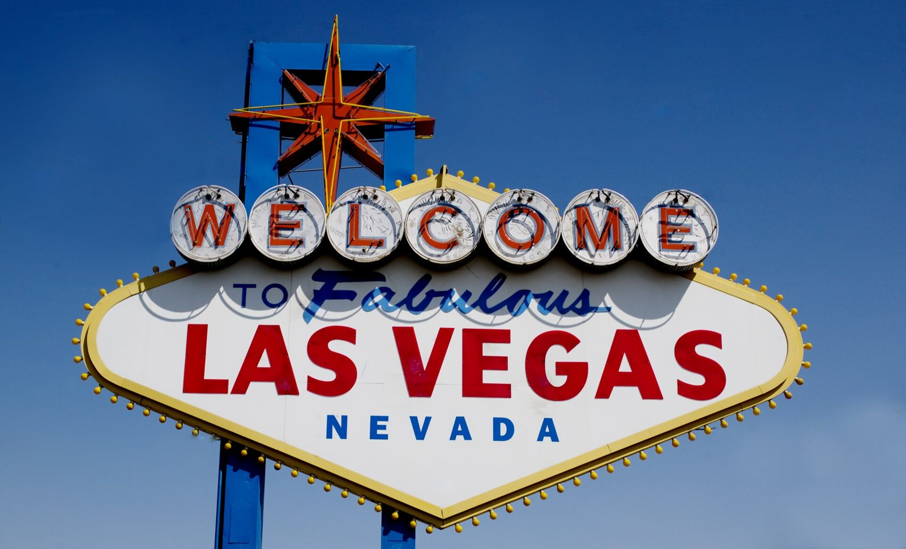

References / Signage / 485
Welcome to Fabulous Las Vegas sign
Betty Willis’s 1959 roadside sign: a stretched diamond ringed with bulbs, “Welcome” in neon silver dollars, “Fabulous” in cursive, and an eight-point star on top.
- Source
- Library of Congress: Carol M. Highsmith, Sign in daytime, Las Vegas, Nevada
- Creator
- Betty Willis, Western Neon
- Made
- Funded May 1959 and erected soon after (Wikipedia); photographed 2007
- Style
- Googie (agent-proposed, not yet reviewed by a person)
- Moods
- Exuberant, flashy, roadside, optimistic
- Evidence
- Downloaded and inspected Carol M. Highsmith’s photograph (Library of Congress LCCN 2010630140; Commons file Sign in daytime, Las Vegas, Nevada LCCN2010630140.tif, Exif date 6 September 2007) at 1920 × 1165 px. Also compared the CC0 2009 view by Ypsilon from Finland on Commons. The south face of the original sign at 5100 Las Vegas Boulevard South is shown; replicas exist elsewhere.
- Reviewed
- Rights
- Open license, stored. License: public domain. Rights policy
Context
The sign was funded in May 1959 and built by Western Neon under contract with Clark County. Betty Willis, a Western Neon employee, designed it at the request of the salesman Ted Rogich. It cost $4,000. Wikipedia: Welcome to Fabulous Las Vegas sign.
Wikipedia describes it as 25 feet tall, a horizontally stretched diamond with pointed top and bottom and rounded sides, internally lit, with chasing yellow incandescent bulbs around the edge. The white neon circles represent silver dollars for “the Silver State.” The eight-point star is red-painted metal outlined in yellow neon. The back reads “Drive Carefully / Come Back Soon.” Wikipedia calls the design characteristic of Googie architecture. Wikipedia.
Willis never claimed copyright. Wikipedia quotes her: “If I had copyrighted the sign, it probably wouldn’t have been used as much and wouldn’t be as famous.” YESCO has owned the physical sign since it bought Western Neon in the early 1960s. Wikipedia; Time, 2015.
Observed
- The cabinet is a wide white diamond with a yellow frame; dozens of round yellow bulbs stand out from its edge on short stalks.
- Seven silver-white discs, edged with ridges like coins and showing faint coin relief, run across the top and each holds one red letter of “WELCOME” outlined in neon tube.
- “TO” in small blue capitals sits beside “Fabulous” in a slanted, connected blue script with a long underline swash.
- “LAS VEGAS” fills the width in heavy red sans-serif capitals; “NEVADA” sits below in small, widely spaced blue capitals.
- An eight-point star, a long four-point star in yellow neon over a shorter red one, bursts out of a blue rectangular frame formed by the two poles and their cross piece.
- Colors are red, blue, yellow, and white, flat and saturated, against clear blue sky.
Why it belongs
The sign is a compact grammar of the style: an angular non-rectangular panel, a starburst that breaks its frame, one word in neon-style script next to bold capitals, and a chasing-bulb border.
The diamond with rounded sides points up and down at once, so the static sign reads as energetic.
Borrow
Put the name on a stretched diamond panel with pointed ends, and ring it with evenly spaced dots.
Set one word in a slanted script between lines of capitals, and let a star overlap the panel’s frame.
Measured
Machine-extracted by tools/image-traits.py on . Full measurement.
- Mean chroma
- 0.29
- Palette
- #245691 22%
- #7793b7 16%
- #dadadb 13%
- #326199 8%
- #134686 8%
- #9e0208 3%
- #5b80ac 3%
- #4b74a5 3%

